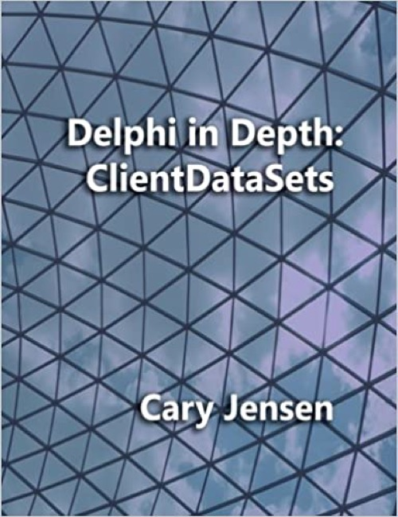

Delphi in Depth: ClientDataSets
Published by : Jensen Data Systems
Writed by : Cary Jensen
Published date : 23/03/2011
ISBN-10 : 1461008581
ISBN-13 : 9781461008583
Language :  English
English
Web site : http://www.jensendatasystems.com/cdsbook/
About Delphi in Depth: ClientDataSets
Delphi in Depth: ClientDataSets, is one book that belongs in the library of every Delphi developer. This in-depth guide, by Delphi ClientDataSet expert Cary Jensen, shows you how to get the most out of Delphi ClientDataSets. With this book, you will discover how ClientDataSets work, learn how to improve your software with powerful Delphi ClientDataSet features, master the art of cached updates, and build multi-tier applications using Delphi's DataSnap. This book covers current and previous versions of Delphi. Online: Accompanying source code and sample database.
Where to buy ?
This book has the ISBN13 "9781461008583".
If it is still available for sale, you can order it in your favorite bookstore, by its publisher or online at
Amazon CA,
Amazon FR,
Amazon JP,
Amazon UK or
Amazon USA depending on your country.
Table of content
Introduction
Chapter 1 Introduction to ClientDataSets
Chapter 2 Loading Data with ClientDataSets and Catastrophes
Chapter 3 Saving Data with ClientDataSets and DataSetProviders
Chapter 4 Defining a ClientDataSet's Structure
Chapter 5 Understanding ClientDataSet Indexes
Chapter 6 Managing the ClientDataSet Change Cache
Chapter 7 Navigating ClientDataSets
Chapter 8 Searching ClientDataSets
Chapter 9 Filtering ClientDataSets
Chapter 10 Aggregates and GroupState
Chapter 11 Cloning ClientDataSet Cursors
Chapter 12 Using Nested DataSets
Chapter 13 ClientDataSets and DataSnap Servers
Chapter 14 ClientDataSets and DataSnap Clients
Chapter 15 Remote ClientDataSet-DataSetProvider Interaction
Appendix A Web Page for the Delphi in Depth: ClientDataSets Book
Index